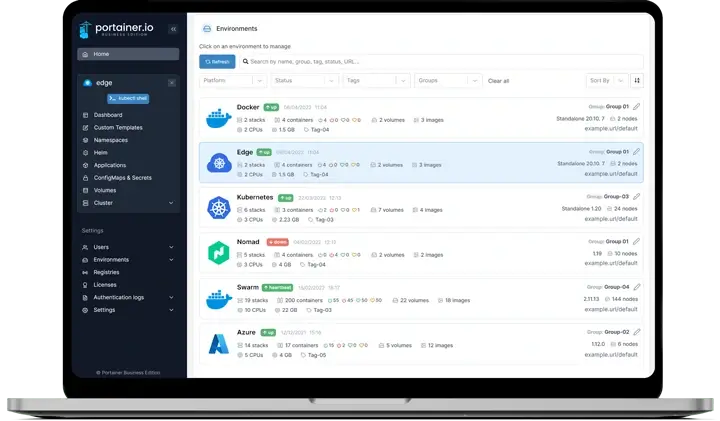
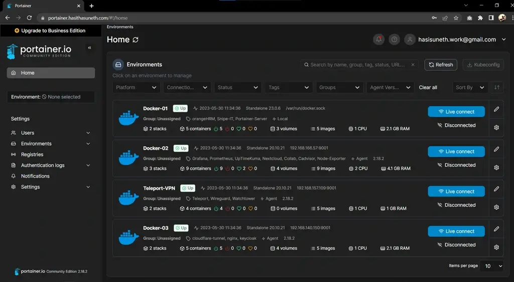
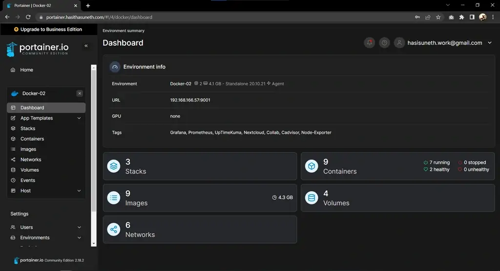
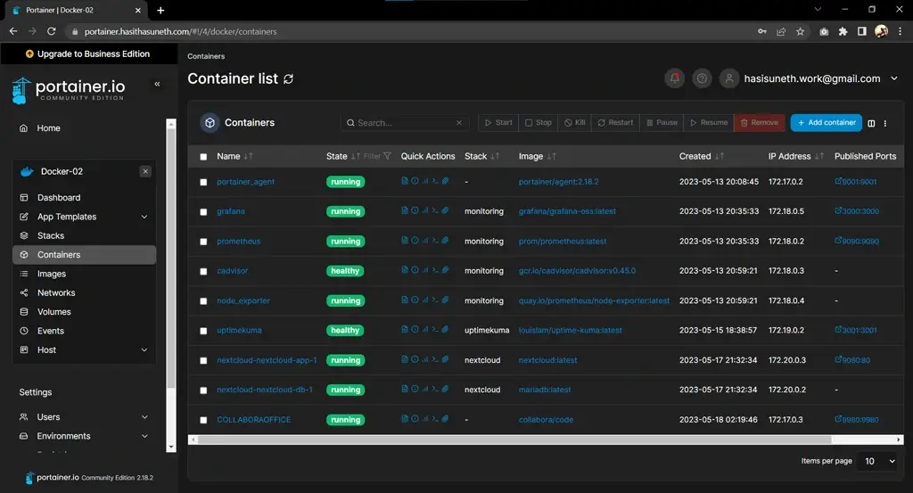
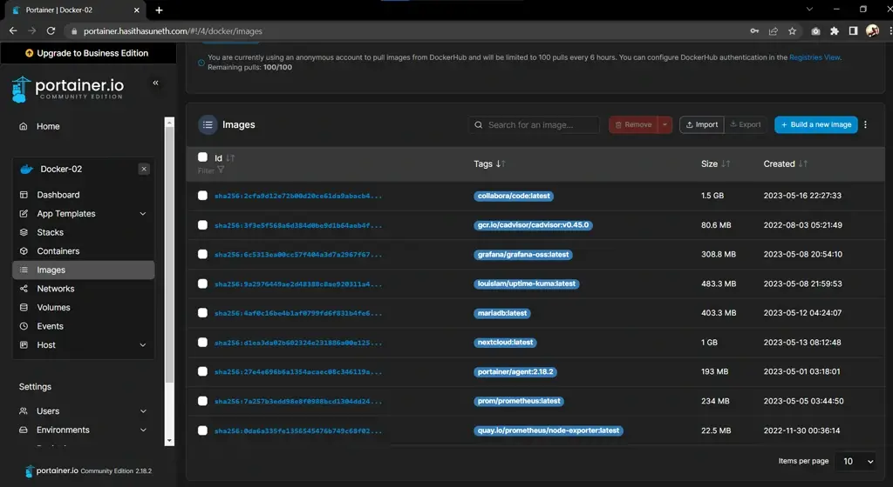
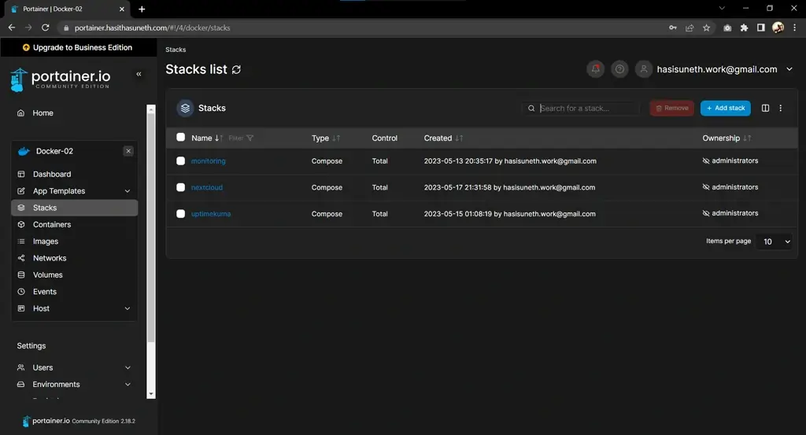
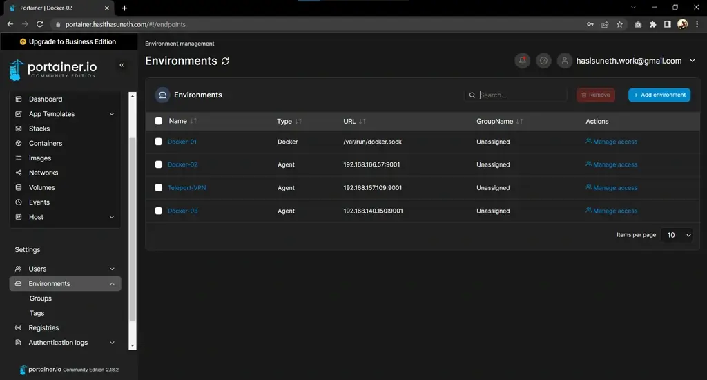

Portainer Deployment on Linux (Ubuntu) via Docker & Docker-Compose
Portainer is a lightweight management UI that allows you to easily manage your different Docker environments.
Table of contents
What is Portainer?
Portainer Community Edition (CE) is a powerful, open-source toolset that allows you to easily build and manage containers in Docker, Docker Swarm, Kubernetes, and Azure ACI. Portainer consists of two elements, the Portainer Server, and the Portainer Agent. Both elements run as lightweight Docker containers on a Docker engine.
Portainer CE is available to install with Docker on Linux, Docker on WSL/Docker Desktop, and Docker on Windows Container Service.

In this tutorial, we are going to install Portainer with Docker on the Linux and use Ubuntu as the Linux distribution systems.
Steps to follow
- Install Docker and Docker-Compose
- Install & Set up Portainer
Prerequisites
To install Docker Engine on Ubuntu, you need the 64-bit version of one of these Ubuntu versions:
- Ubuntu Kinetic 22.10
- Ubuntu Jammy 22.04 (LTS)
- Ubuntu Focal 20.04 (LTS)
- Ubuntu Bionic 18.04 (LTS)
Docker Engine is compatible with x86_64 (or amd64), armhf, arm64, and s390x architectures.
If you are using another Linux distribution system, check out Docker’s official documentation for prerequisites.
Install Docker, and Docker-Compose
Docker Engine is an open source containerization technology for building and containerizing your applications. Docker Engine acts as a client-server application with:
- A server with a long-running daemon process dockerd.
- APIs which specify interfaces that programs can use to talk to and instruct the Docker daemon.
- A command line interface (CLI) client docker.
The CLI uses Docker APIs to control or interact with the Docker daemon through scripting or direct CLI commands. Many other Docker applications use the underlying API and CLI. The daemon creates and manage Docker objects, such as images, containers, networks, and volumes.
Install Docker Engine
Official
Follow this Official Guide for install Docker Engine on other Linux distribution systems.
Uninstall old versions
sudo apt-get remove docker docker-engine docker.io containerd runc
Set up the repository
Update the apt package index and install packages to allow apt to use a repository over HTTPS:
sudo apt-get update sudo apt-get install ca-certificates curl gnupg lsb-release
Add Docker’s official GPG key:
sudo mkdir -m 0755 -p /etc/apt/keyrings curl -fsSL https://download.docker.com/linux/ubuntu/gpg | sudo gpg --dearmor -o /etc/apt/keyrings/docker.gpg
Use the following command to set up the repository:
echo \ "deb [arch=$(dpkg --print-architecture) signed-by=/etc/apt/keyrings/docker.gpg] https://download.docker.com/linux/ubuntu \ $(lsb_release -cs) stable" | sudo tee /etc/apt/sources.list.d/docker.list > /dev/null
Install Docker Engine
sudo apt-get update sudo apt-get install docker-ce docker-ce-cli containerd.io
Verify that the Docker Engine is installed correctly.
sudo systemctl is-active docker
Install Docker-Compose
Download and install Compose standalone latest version.
In this case (20/03/2023), it is v2.16.0; Refer to the Official Documentation to identify the latest version.
curl -SL https://github.com/docker/compose/releases/download/v2.16.0/docker-compose-linux-x86_64 -o /usr/local/bin/docker-compose sudo chmod +x /usr/local/bin/docker-compose
Verify that the Docker-Compose is installed correctly.
sudo docker-compose --version
Install & Set up Portainer
For further details, kindly consult the Official Documentation.
Create a new Docker Volume
This volume that Portainer Server will use to store its database.
docker volume create portainer_data
Launch Portainer
Download and install the Portainer Server container.
docker run -d -p 8000:8000 -p 9443:9443 --name=portainer --restart=always -v /var/run/docker.sock:/var/run/docker.sock -v portainer_data:/data portainer/portainer-ce
Logging In
Logging into your Portainer Server instance by opening a web browser and going to:
https://localhost:9443
Replace
localhostwith the relevant IP address or FQDN if needed, and adjust the port if you changed it earlier.
Screenshots





